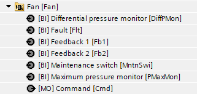
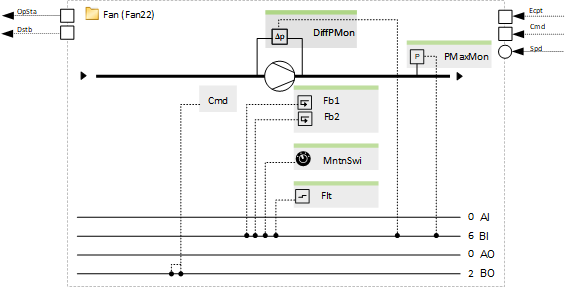
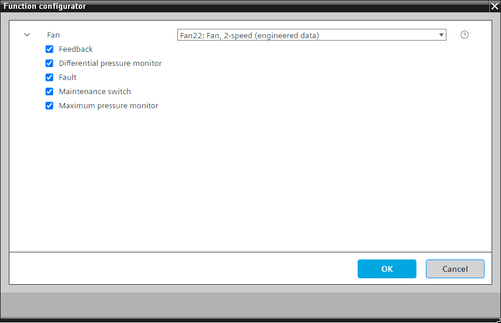

[Fan22] 风扇，2 速
Program block, name / node subtype: [Fan22] Fan, 2-speed
Library hierarchy: Ventilation and air conditioning equipment
Family: Fan
项目树 | 图表 |
|---|---|
|
 |  |
Configurator


程序块存储在没有 I/Os. 的库中 使用auto-create and auto-connect函数创建 I/Os 和 /or 将它们连接到接口块，例如 R_A、CMD_B。或者，从包含库中预定义 I/Os 的文件夹中取出 I/Os，并从工厂中取出 /or，并将它们连接到接口块。
控制 2 速风扇。
以下选项生成的所有警报都会停止风扇，以高优先级（优先级 5）阻止其输出并关闭工厂。
该程序块具有以下可选功能：
Option: Differential pressure monitor (1xBI)
从风扇上的压差监视器读取信号，如果风扇必须运行时缺少压差，则会生成警报。
Option: Fault (1xBI)
读取风扇控制单元的故障信号并产生警报。
Option: Feedback (1xBI)
读取反馈信号（例如来自风扇控制单元的反馈信号），如果风扇必须运行时反馈丢失，则生成警报。
Option: Maintenance switch (1xBI)
读取维护开关的信号并产生警报。如果激活，则风扇的输出将以非常高的优先级（优先级 2）停止。
Option: Maximum pressure monitor (1xBI)
从最大压力监视器读取信号并生成警报。
姓名 | 描述 | 类型 | 报警/通知类 | 趋势/类型 |
|---|---|---|---|---|
|
Flt | Fault | BI：二进制输入 | Yes, 4/5 | No |
MntnSwi | Maintenance switch | BI：二进制输入 | 是的，5 | No |
DiffPMon | Differential pressure monitor | BI：二进制输入 | 是的，4 | No |
PMaxMon | Maximum pressure monitor | BI：二进制输入 | 是的，4 | No |
描述 |
|---|
Feedback 属于其他选项的元素： Fb1 | Feedback1 | BI：二进制输入 |警报：有|Notification class 4 Fb2 | Feedback2 | BI：二进制输入 |警报：有|Notification class 4 |
在阶段之间切换时，存在风扇惯性滑行的逻辑。